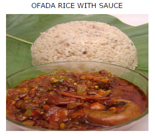

OFADA RICE

DESCRIPTION
This is a traditional native rice, served in a traditional leaf mostly from the eastern part of Nigeria.
INGREDIENTS
- 200g Ofada(native)rice
- 10 pieces semi-ripe red chili peppers
- 1 oz Locust beans
- 2 ½ cooking spoon of Palm Oil
- 400g Assorted meat
- 7 pieces Tomatoes
- 1 Onions
- 1 Garlic/ ginger
- 1 oz Shrimps
- ½ Crayfish
- 8 Snails
- Seasoning (Maggi, salt, thyme and curry)
STEPS
-
STEP 1: Boil the native Ofada rice till cooked (be sure the rice is clean before boiling)
-
STEP 2: Grind or pound all the pepper, with tomatoes, few onions, a bit of garlic and gingers.
-
STEP 3: Add 2 ½ cooking spoon of palm oil with sliced onions, a pinch of salt, allow to fry for 3mins.
-
STEP 4: Add all the grinded pepper, crayfish, shrimps, snail, assorted meat and the rest, enough locust beans, Add a
pinch of salt and 1 ½ Maggi to cook and add, curry, thyme and brown stock, but check the taste if okay,
leave all to cook for 15 minutes.
Home